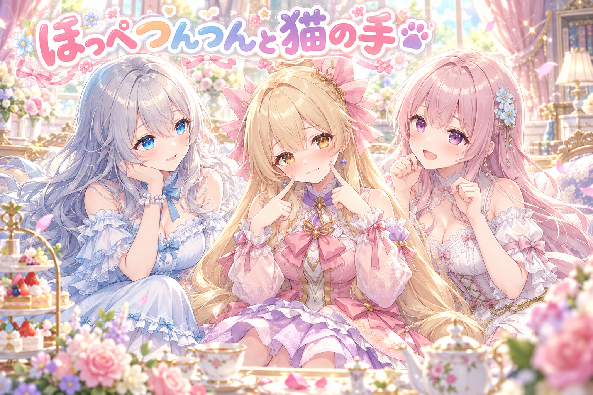
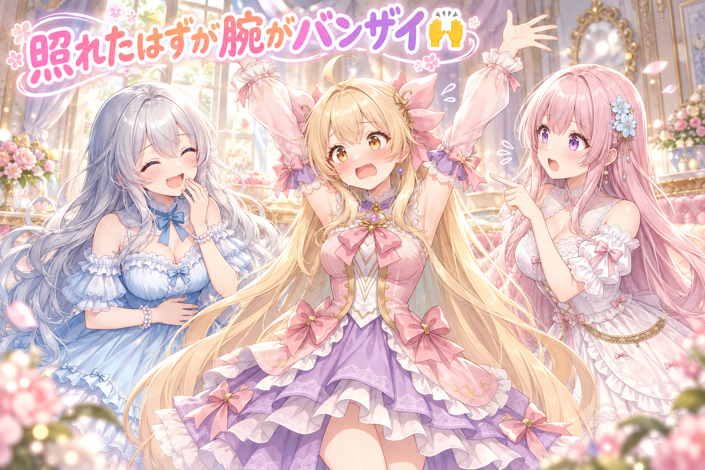
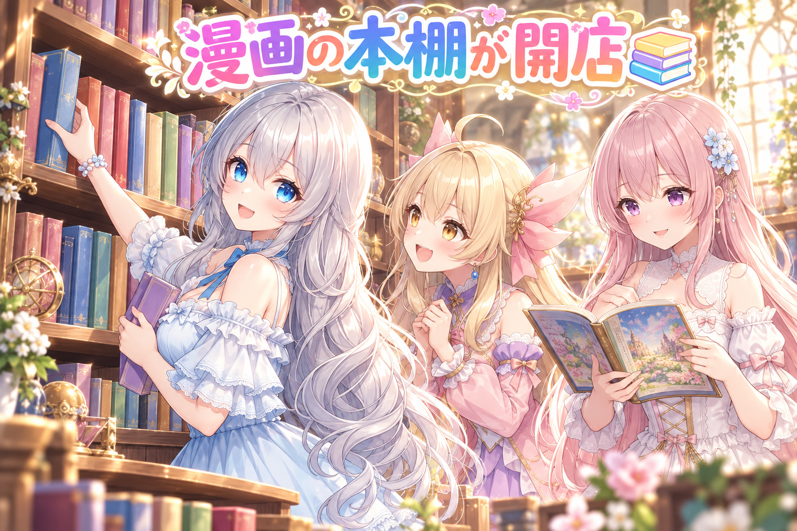
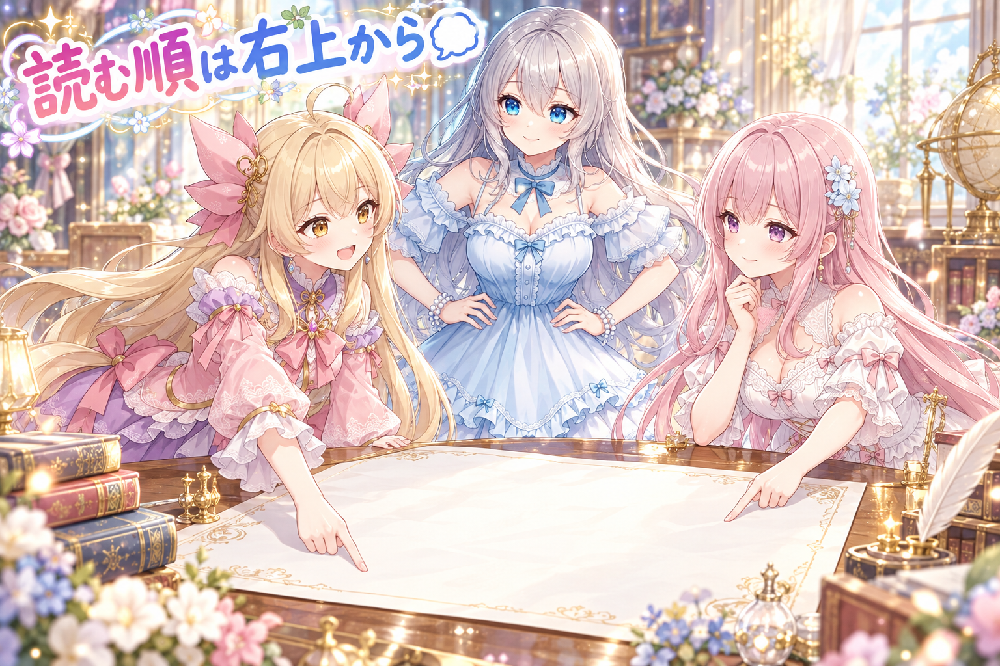
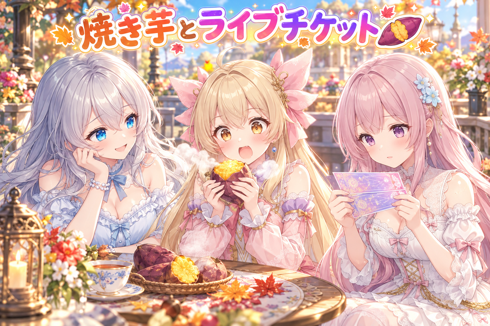
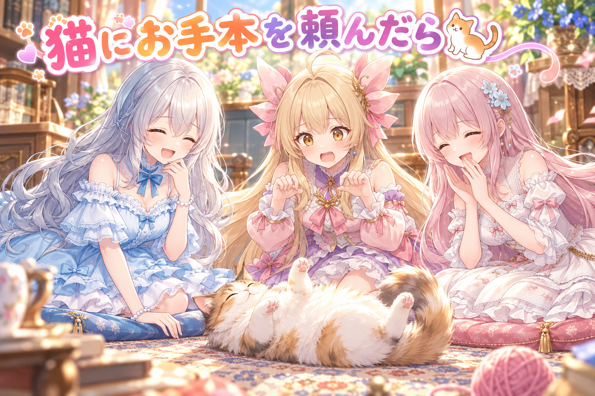

📌 3行まとめ
- Live2D のアイリスに、手の絵を描き替えずに作る照れの構えを2つ（頬を人差し指でつつく・猫の手をあごの横に）作り、厳しい検品を何度も回した
- 腕を顔まで上げる途中で、腕が体の外を大回りしてバンザイのようになる問題が見つかり、通り道を胸の前へ変えた
- 漫画を作品ごとに読めるギャラリーページと、吹き出し・ナレーションを読む順に置くルール、配布レシピ（焼き芋など）を作った

ルピナス （笑顔）
はーい、常連さんいらっしゃい。今日もAIBSのゆるい放送室、開きますよ〜。

アイリス （大笑い）
前回はハロウィン企画を締切順に焼いてたよね！あと、ふつうの言葉でチェックに止められてた！

フィオナ （ふつう）
はい。今日はその続きではなく、アイリスちゃんの照れ顔のお話が中心です。

アイリス （照れ）
え、あたしの照れ顔が今日の主役！？いきなり恥ずかしいんだけど！
ルピナス （笑顔）
そう、今日は照れて、つついて、にゃんってするよ。最後まで付き合ってね。
1. 🫣 照れの構えを2つ、手を描き替えずに作る

Live2D のアイリスに、照れたときの構えを2つ作りました。ひとつは両手の人差し指で頬の赤みをつんつんする「ほっぺ」、もうひとつは指を丸めた猫の手をあごの横に添えて小さく招く「口元」です。
むずかしいのは、手の絵を丸ごと別の絵に差し替えないこと。手のひら・まっすぐの指・曲げた指・親指という部品を曲げ伸ばしするだけで形を作ります。
もうひとつの壁は、腕の長さ。手が顔まで届きにくいので、顔を20〜30度くらいうつむかせて首もかしげ、顔のほうから手に近づける作戦にしました。
ルピナス （笑顔）
ではクイズです。手が顔に届かないとき、照れの構えはどうやって作ったでしょう？

アイリス （ドヤ顔）
はい！腕をびよーんって伸ばす！

フィオナ （呆れ）
アイリスちゃん、それは照れではなく怪奇現象です。

アイリス （考え中）
じゃあ、手の絵を顔の近くに描いた別の絵に差し替える！

ルピナス （ふつう）
それは今回いちばんやっちゃダメなやつ。手は今ある指の部品だけで作る決まりなの。

フィオナ （笑顔）
正解は、顔のほうが手に近づく、です。うつむいて首をかしげると、人差し指がちょうど頬に届くんです。

アイリス （びっくり）
なるほど！手が来ないなら顔が行く！山が来ないなら……なんだっけ？

ルピナス （大笑い）
ことわざうろ覚えのまま照れないの。でも、うつむきってそれだけで照れて見えるからお得なんだよね。

フィオナ （考え中）
猫の手のほうは、指を爪が見えるくらいまで丸めて、かたまりに見せています。にゃん、にゃん、で2回招きます。

アイリス （ウインク）
にゃん、にゃん♪……ねえ、これ配信でやったら絶対ウケるよね？
ルピナス （ふつう）
ウケる前に、まずは検品に通ってからね。

アイリス （しょんぼり）
……猫の手、まだ借りられないにゃん。
📝 ポイント（初心者向け解説・技術メモ・まとめ）
- 初心者向け解説：手が顔に届かないなら、顔のほうからおじぎして近づけばOK。背の低い子とハイタッチするとき、こっちがかがむのと同じです🐾
- 技術メモ：手の差し替えなしで指の曲げ伸ばし軸（0＝曲げ・1＝まっすぐ）だけで形を作り、届かない分は頭の AngleY を −20〜−30 程度のうつむき＋首かしげで補う。猫の手は4本の指を丸めきって1つのかたまりに見せる
- ひとことまとめ：届かない距離は、体のほうを動かして埋める。
2. 👀 今日のやらかし

腕を下ろした状態から顔まで上げる動きをこま送りで見たら、とんでもない通り道になっていました。ひじの曲げ角度を0度から160度あまりまで一定のペースで増やしていたせいで、前腕がひじを中心に体の外側をぐるっと回り、0.7秒前後で腕を真横に広げ、1秒手前では頭の外でバンザイ。そこからやっと顔に来ていたんです。
関節の角度を素直に増やすだけだと、手先は思った道を通ってくれない、というのが今日のいちばんの学び。今の版では、手が胸の前を通って顔へ向かう道筋に変えました。ただ、新しい道でも左の前腕が体の真ん中の線を一瞬越えるこまを検品で指摘されていて、こま送りでの粗探しが続いています。
ルピナス （ふつう）
では、問題の映像を実況つきで振り返ります。アイリス、照れてください。
アイリス （照れ）
えへへ……照れちゃう……ほっぺつんつんしに行きま〜す……

フィオナ （びっくり）
あっ、腕が外へ開いていきます。まだ真横です。真横のまま上がっていきます。

アイリス （あわあわ）
え、待って、あたし今なにしてるの！？照れてる子の腕の動きじゃないよね！？
ルピナス （大笑い）
出ました、頭の上でバンザイ。照れた瞬間に優勝したみたいになってる。

アイリス （怒り）
優勝してない！照れてるの！そのあとでほっぺに着地するの！
フィオナ （考え中）
原因は、ひじの角度を一定の速さで増やしたことです。角度だけ見ると順調でも、手先はひじを中心に大きな円を描いてしまうんです。

アイリス （無表情）
つまり、あたしの腕はコンパスだったってこと？
ルピナス （笑顔）
たとえは合ってる。だから今は、手が胸の前を通って顔に行く道にしたよ。

アイリス （笑顔）
やった！これで照れても優勝しない！
フィオナ （呆れ）
ただ、検品の方から、左の前腕が真ん中の線をほんの一瞬越えていると指摘がありました。

アイリス （泣き）
バンザイは卒業したのに、今度ははみ出し注意！？
ルピナス （ふつう）
一瞬でも見えるものは見えるからね。それと、これ夜通しでこま送りしてたでしょ。粗探しは大事だけど、ちゃんと寝てからにしてね。

フィオナ （照れ）
はい……お姉ちゃんの言うとおりです。眠い目で見ると、見落としも増えますし。
📝 ポイント（初心者向け解説・技術メモ・まとめ）
- 初心者向け解説：ひじの曲がりだけをまっすぐ増やすと、手はぐるっと遠回りします。ドアを開けるとき、ドアノブがまっすぐではなく弧を描いて動くのと同じです🚪
- 技術メモ：肩→ひじ→手首の鎖でひじ角を線形補間すると、手先はひじ中心の円弧を描く。手先の通り道を先に決め、途中のキーで胸の前を通すように組み、30fps のこま送りで中心線の越えやはみ出しを確認する
- ひとことまとめ：角度が正しくても、道が正しいとは限らない。
3. 📚 漫画を作品ごとに読める棚ができた

これまでのギャラリーは1枚絵が中心でしたが、全年齢の漫画を作品ごとにまとめて読めるページを新しく作り、入口からリンクを張りました。
こだわったのは、リンクを出すタイミング。漫画がまだ1本も載っていないのにリンクだけあると、押した人が空っぽの部屋に通されてしまいます。そこで、作品が1本以上載ったときだけ入口にリンクが出るようにしました。
アイリス （笑顔）
ねえねえ、漫画の棚ができたってことは、あたしたちの本屋さんがオープンってこと？
フィオナ （笑顔）
本屋さんというより、作品ごとに読める本棚ですね。1冊ずつ開いて読めます。
アイリス （ウインク）
いいな〜。で、看板はもう出したの？「漫画あります」ってドーンと！
ルピナス （ふつう）
看板は、本が並んでからしか出さない仕組みにしたよ。
アイリス （びっくり）
えっ、先に看板出して、お客さん集めておいたほうがよくない？
フィオナ （考え中）
でも、アイリスちゃんが楽しみに入ったお店の棚が全部空っぽだったら、どう思いますか？
アイリス （しょんぼり）
……泣きながらお店の人に「まだですか」って聞く。
ルピナス （大笑い）
でしょ。だから看板は本が並んでから。空振りさせない作りにしたの。
アイリス （ドヤ顔）
じゃあ、あたしは看板が出た瞬間に一番乗りする係やるね！

フィオナ （無表情）
アイリスちゃん、それは作る側ではなく読む側の係です。
📝 ポイント（初心者向け解説・技術メモ・まとめ）
- 初心者向け解説：中身がまだのページへの入口は、中身ができてから開けるのが親切。開店前のお店に案内の看板を出さないのと同じです📚
- 技術メモ：漫画の一覧データに作品が1件以上あるときだけ入口のリンクを描画する条件分岐にし、空ページへの導線を作らない
- ひとことまとめ：リンクは、押した先に何かがあるときだけ出す。
4. 🗯️ ナレーションは右上から読ませる

日本の漫画は縦書きで、右から左、上から下へと読み進めます。なので、場面を説明する四角いナレーションの枠をどこに置くかで、読みやすさが大きく変わります。
うちでは、ナレーションの1本目は右上、2本目は左上、3本目は左下と決めています。効果音の文字は数えません。右上が髪や手で少し狭くても、ちょっと重なるくらいなら右上を譲らない、というのもルールです。今日は、吹き出しを自動で置く道具に、ナレーション枠を2〜4列の縦長にすることと、少し重なる程度なら右上に置くことを入れました。ナレーションの無いページには、なぜ無いのかを理由として書き残すようにもしています。
アイリス （怒り）
異議あり！右上が髪で狭いなら、空いてる左下に置けばいいじゃん！広いほうが気持ちいいよ！
フィオナ （ふつう）
反対です。読む人の目は右上から始まります。最初の説明が左下にあると、オチより先に前置きを探しに戻ることになってしまいます。
アイリス （考え中）
戻ればいいじゃん。人生だって振り返りが大事だよ？
フィオナ （呆れ）
漫画を読んでいる最中に、人生の振り返りはしなくていいんです。
ルピナス （笑顔）
はい、討論はそこまで。裁定します。ナレーションは右上、少し髪にかかるくらいなら気にしない。
アイリス （びっくり）
えっ、かかってもいいの？それならあたし、ちょっと納得。
ルピナス （ふつう）
そのかわり、枠は2〜4列の縦長にして、すき間に収まりやすくしたの。横に長い枠だと、どうしても顔や手にかぶっちゃうからね。
フィオナ （笑顔）
ナレーションが無いページにも、無い理由を書くようにしました。あとで見返したとき、置き忘れなのか、わざとなのかが分かります。
アイリス （ドヤ顔）
じゃあ、あたしのセリフが無いページにも理由を書いてね。「アイリスはおやつ中」とか。
ルピナス （大笑い）
それは理由じゃなくて、ただのサボりの記録だよ。
📝 ポイント（初心者向け解説・技術メモ・まとめ）
- 初心者向け解説：縦書きの漫画は、目が右上からスタートします。最初のお知らせは、目が最初に来る場所に置いてあげるのが親切です🗯️
- 技術メモ：ナレーションは本数で位置を固定（1本目＝右上／2本目＝左上／3本目＝左下・効果音は数えない）。枠は2〜4列の縦長に寄せ、掠る程度の重なりなら右上を維持。ナレ無しページには理由を記録し、置き忘れと意図的な省略を区別する
- ひとことまとめ：置き場所は空きではなく、読む順で決める。
5. 🍠 配るレシピは焼き芋とチケット

三姉妹の絵を作れるレシピの配布も、何日分か準備しました。焼き芋を頬ばる秋らしい1枚、手書きのレシピカード、夜店のくま、スケッチ帳、ライブのチケットとセットリストなど、季節や小物が主役のテーマです。
その中で見つかったのが、焼き芋のページでアイリスの一人称が「あたし」になっていなかったこと。キャラの口調は小さな違いでも、読む人には「誰これ？」になるので、すぐに直しました。セットリストの絵のほうは、曲順の番号が崩れないよう、雛形の段階で番号を確認するようにしています。

アイリス （衝撃）
ちょっと待って！焼き芋のページのあたし、あたしって言ってなかったの！？
ルピナス （ふつう）
うん、そこだけ別の一人称になってたから、「あたし」に直したよ。
アイリス （怒り）
焼き芋を食べてる最中に、一人称を落としたってこと！？

フィオナ （大笑い）
アイリスちゃん、焼き芋が熱くて、つい言葉を落としたのかもしれません。
アイリス （大笑い）
なるほど、ハフハフしすぎて「あた」が抜けちゃったんだ！

ルピナス （呆れ）
納得しないの。キャラの一人称は名札みたいなものだから、1か所でも違うと別人に見えちゃうんだよね。
フィオナ （笑顔）
ライブのチケットのほうは、曲の番号が飛んだり重なったりしないよう、雛形で見張っています。
アイリス （笑顔）
いいね！一曲目、焼き芋のうた！二曲目、焼き芋のうた（アンコール）！
ルピナス （大笑い）
番号は合ってても、曲が全部同じなのはダメ。
📝 ポイント（初心者向け解説・技術メモ・まとめ）
- 初心者向け解説：キャラの一人称は、その子の名札みたいなもの。1か所違うだけで別の子に見えちゃうので、配る前にもう一度チェックします🍠
- 技術メモ：配布ページのセリフはキャラごとの一人称（ルピナス＝わたし・アイリス＝あたし）を確認。番号付きの小物（セットリスト等）は雛形の段階で番号の並びを検査し、生成後の崩れを減らす
- ひとことまとめ：小物の数字とキャラの口調は、配る前にもう一度。
6. 🎁 お楽しみコーナー：大喜利お題

今日は大喜利！照れの構えで猫の手を作ったので、お題はこちら。
お題：「猫の手も借りたい」日に、本物の猫が手伝いに来てくれました。何を頼む？
ルピナス （笑顔）
お題を出したわたしから行くね。「キーボードの上で寝ないでください、とだけお願いする」。
フィオナ （びっくり）
お姉ちゃん、それは手伝いではなく、邪魔をしないお願いでは……？
ルピナス （大笑い）
それがいちばん助かるの。猫の手伝い、だいたい乗るところから始まるから。
フィオナ （考え中）
では私は、「こま送りの検品をお願いします。動くものを見つけるのは得意そうなので」。
アイリス （大笑い）
それ、はみ出した前腕に猫パンチするやつじゃん！検品っていうか狩りだよ！
アイリス （ドヤ顔）
あたしはね〜、「猫の手のポーズのお手本をお願いする」！本物から習えば一発合格！

ルピナス （びっくり）
あ、それはまともにいい答え。
アイリス （あわあわ）
……と思ったら、猫が寝転がってお腹を見せてきた！お手本、それじゃない！
フィオナ （笑顔）
アイリスちゃん、今日いちばん照れの構えらしいのは、たぶんその猫です。

ルピナス （ウインク）
みんなが猫に何を頼むか、コメント欄でこっそり教えてね。いちばん猫っぽい答えに座布団あげちゃう。
7. 💐 今日のまとめ
- 手が顔に届かないときは、うつむきと首かしげで顔のほうを手に近づける
- 関節の角度を一定の速さで増やすと、手先は大回りする。通り道を決めてから、こま送りで確かめる
- リンクは中身ができてから出す。ナレーションは空きではなく、読む順で置く
みんなは、作ったものの見落としをどうやって見つけてる？
💬 コメント
お名前とコメントだけで送れるよ（承認されるとみんなに表示されます🌸）
コメントを読み込み中…